The Complete CPU
Sections 14.17 – 14.19 | Estimated time: ~40 minutes | Your reference for Weeks 15–17 and the final project
Pages 1–3 added the last pieces one at a time. This page puts them together: every pin and every equation of the final control unit, and every addition to the CPU tab, numbered, with where it goes. When the final project says your CPU simulation is complete, it means what this page describes. The design is your instructor’s Fall 2025 CPU; each section shows his figure next to a diagram drawn for this course, and marks where they differ.
14.17 The final control unit
Since Week 11 your control unit has turned the IR and the stepper into enable and set lines. Three things change in its final form, all from your instructor’s design:
- LOAD, MARS and RESET come in. They are control inputs, so they belong where every other control decision is made. LOAD stops the stepper (its clock is
clkAND NOTload) and silences step 1 (step1AND NOTload); MARS is ORed intomar_s; LOAD ANDclk_sis ORed intoram_s; RESET is ORed into nine set lines. - The register decoders move inside. RESET must set all four registers, but
regb_sreaches only the one RB names. So the unit decodes the register fields itself and its outputs becomer0_e–r3_eandr0_s–r3_s, with RESET ORed into the four sets. You build this section as your instructor did — three 2×4 decoders and three-input AND gates — and it replaces theREG_SELECTon your CPU tab. “The register decoders, gate by gate”, below, draws it. - The bus is pulled down. RESET drives nothing. Every pin that faces the bus is set to Pull Behavior: Pull Down, so while RESET holds the sets high, an undriven bus reads
00000000and every register captures 0. ACC and FLAGS capture the ALU’s 0 ADD 0, so after RESET the flags read C A E Z = 0 0 1 1. RESET also reaches your RAM’sreset, which clears its bytes.
CONTROL_UNIT. The shaded blocks are the final control section; everything else you built in Weeks 11–14.Its pins
Course names are lowercase; the second column is the label on your instructor’s figure, so you can match the two.
| Input | His label | Width | What it does |
|---|---|---|---|
clk | clk | 1 | the clock’s clk (the stepper’s clock, through AND NOT load) |
clk_e | clke | 1 | enable quarter |
clk_s | clks | 1 | set quarter |
ir | IR_IN | 8 | the IR’s output |
fc fa fe fz | C A E Z | 1 each | the FLAGS outputs |
load | LOAD | 1 | loading: freezes the stepper, silences step 1, writes RAM in the set quarter |
mars | MARS | 1 | the MAR follows the bus |
reset | RESET | 1 | writes 0 into every register (the bus is pulled down) |
Every output, with its whole equation. final marks the lines the final section changes; the bold part is what it adds. RA and RB are the IR’s bits 3–2 and 1–0; match is page 2’s (fc AND b3) OR (fa AND b2) OR (fe AND b1) OR (fz AND b0).
| Output | His label | = |
|---|---|---|
| pc_e | PC_E | ( (step1 AND NOT load) OR (step4 AND DATA) OR (step4 AND JMP) OR (step4 AND Jcaez) ) AND clk_e |
| ram_e | RAM_E | ( step2 OR (step5 AND LD) OR (step5 AND DATA) OR (step5 AND JMP) OR (step6 AND Jcaez AND match) ) AND clk_e |
| acc_e | ACC_E | ( step3 OR (step6 AND ALU AND NOT CMP) OR (step6 AND DATA) OR (step5 AND Jcaez) ) AND clk_e |
| r0_e – r3_e final | R0_E – R3_E | (rega_e AND RA = k AND clk_e) OR (regb_e AND RB = k AND clk_e), from the register decoders, where rega_e = (step5 AND ALU) OR (step4 AND LD) OR (step4 AND ST) and regb_e = (step4 AND ALU) OR (step5 AND ST) OR (step4 AND JMPR), both now internal and no longer ANDed with clk_e on their own |
| mar_s final | MAR_S | [ ( (step1 AND NOT load) OR (step4 AND LD) OR (step4 AND ST) OR (step4 AND DATA) OR (step4 AND JMP) OR (step4 AND Jcaez) ) AND clk_s ] OR mars |
| ram_s final | RAM_S | [ (step5 AND ST) AND clk_s ] OR (load AND clk_s) |
| ir_s final | IR_S | [ step2 AND clk_s ] OR reset |
| pc_s final | PC_S | [ ( step3 OR (step6 AND DATA) OR (step4 AND JMPR) OR (step5 AND JMP) OR (step5 AND Jcaez) OR (step6 AND Jcaez AND match) ) AND clk_s ] OR reset |
| acc_s final | ACC_S | [ ( (step1 AND NOT load) OR (step5 AND ALU) OR (step4 AND DATA) OR (step4 AND Jcaez) ) AND clk_s ] OR reset |
| tmp_s final | TMP_S | [ (step4 AND ALU) AND clk_s ] OR reset |
| flags_s final | FLAGS_S | [ ( (step5 AND ALU) OR (step4 AND CLF) ) AND clk_s ] OR reset |
| r0_s – r3_s final | R0_S – R3_S | (regb_s AND RB = k AND clk_s), from the register decoders, OR reset, where regb_s = (step6 AND ALU AND NOT CMP) OR (step5 AND LD) OR (step5 AND DATA), now internal and no longer ANDed with clk_s on its own |
| bus1 | BUS1 | ( (step1 AND NOT load) OR (step4 AND CLF) OR (step4 AND DATA) OR (step4 AND Jcaez) ) |
| opcode | ALU_0, ALU_1, ALU_2 | IR bits 4, 5, 6, each AND (step5 AND ALU) |
| c | C | (step5 AND ALU) |
| end | END | the IR byte = 11001111: one AND of the eight bits, b5 and b4 through NOTs |
| io optional | IO | IR bit 3 |
| da optional | DA | IR bit 2 |
| io_clk_s optional | IO CLKS_S | step4 AND I/O AND io AND clk_s |
| io_clk_e optional | IO CLK_E | step5 AND I/O AND NOT io AND clk_e |
The four optional outputs are in your instructor’s unit for I/O devices this course never builds. The course gives no I/O encoding (Week 12), so they are decoded the way his figure suggests and left unconnected: add them if you like; they are not graded.
![Your instructor's complete control section in Logisim. Inputs clks, clk, clke and LOAD at the top left feed the stepper through an AND with NOT LOAD. Below, a large field of AND and OR gates produces BUS 1, PC_E, RAM_E, ACC_E, C, IO CLK_E, REG B_E, REG A and the ALU lines on the left edge and IR_S, MAR_S, PC_S, ACC_S, RAM_S, TMP_S, FLAGS_S on the right. Three 2 by 4 decoders at the bottom produce R0_E to R3_E and R0_S to R3_S, each set line ORed with RESET. END, IO and DA outputs sit at the bottom right; inputs C, A, E, Z and the 8-bit IR_IN at the bottom left.](images/control-unit-full.png)
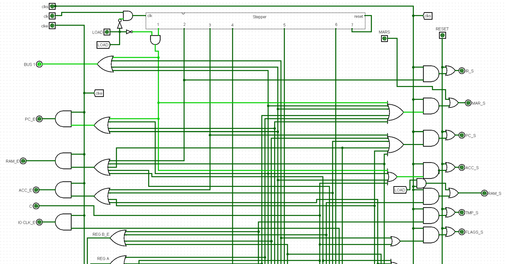
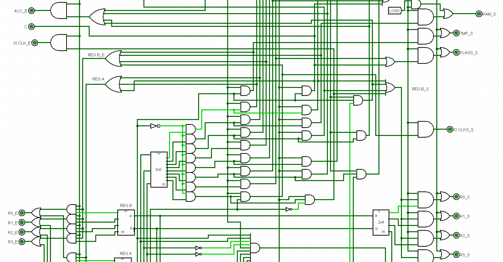
MAR_S.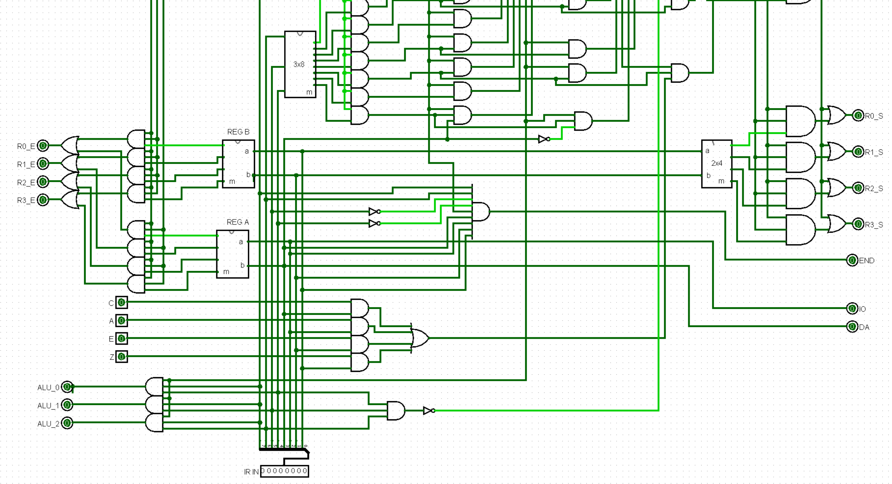
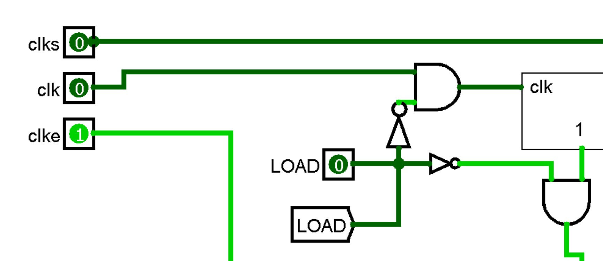
clk AND NOT load clocks the stepper; step1 AND NOT load.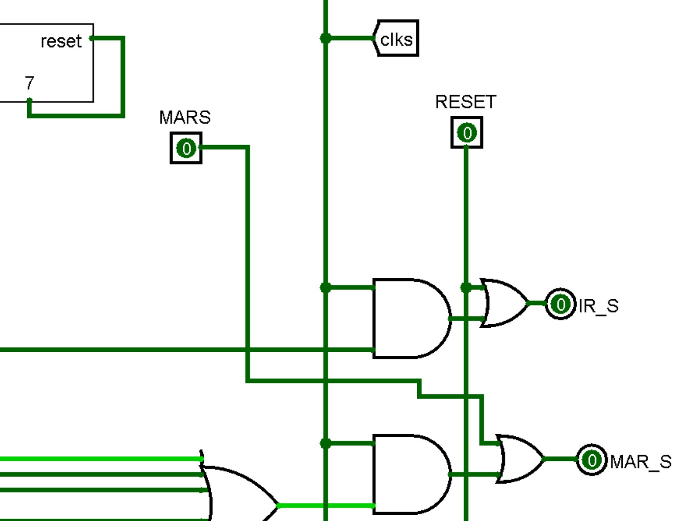
MAR_S; RESET into IR_S.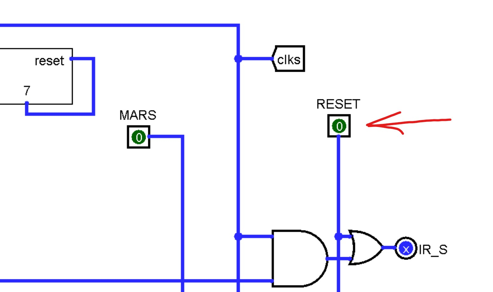
The register decoders, gate by gate
This section is new to your control unit, and it replaces the REG_SELECT instance on your CPU tab. Build it from his figure, not by moving REG_SELECT inside. In his design every register gate is a three-input AND: the decoder’s line, rega_e, regb_e or regb_s, and the clock quarter. Your Week 10 REG_SELECT has two-input ANDs, because since Week 11 your control unit ANDed the quarter into those three lines before they left the unit. A AND B AND C is the same whichever way you group it, but the gates are not the same, and his figure is the one you will check the finished unit against. So build it his way:
- Take five outputs off your control unit:
ra,rb,rega_e,regb_eandregb_s. Keep the three control lines inside the unit, but take each one from its OR, before the AND withclk_eorclk_s, and delete those three ANDs. The quarter now enters at each register gate instead. - Place three
DECODER_2TO4s (Week 3): REG A on RA (irbits 3–2), REG B on RB (irbits 1–0), and a third, also on RB, for the sets. A splitter onirgives you both fields, as it did forraandrb. - The enables: eight three-input ANDs and four ORs. For each k from 0 to 3, AND REG A’s output k with
rega_eandclk_e, AND REG B’s output k withregb_eandclk_e, and OR the two intork_e. - The sets: four three-input ANDs and four ORs. For each k, AND the third decoder’s output k with
regb_sandclk_s, then OR it withresetintork_s. - Add the eight outputs
r0_e–r3_eandr0_s–r3_s. On the CPU tab, deleteREG_SELECTand wire each output to its register’seors, whereREG_SELECT’s outputs went.
In Logisim, select an AND gate and set Number of Inputs to 3 in its attributes before you copy it twelve times.
reset; a dot is a connection, and a crossing without one is not.
R0_E–R3_E.
R0_S–R3_S.Check it with the explorer after this section: ADD R1, R2 (0x86) raises r2_e at step 4 and r1_e at step 5, both only in the enable quarter, and r2_s at step 6, only in the set quarter.
- Names. Lowercase course names; the table above gives his label for each.
c. His figure does not show C’s inputs legibly. The course reading isstep5AND ALU, which is what page 3 andMYSIM.txtneed.- RESET does not reach
mar_sorram_s. RESET clears the RAM through its ownreset; MARS sets the MAR next. - I/O. His four I/O outputs are optional in yours.
Try it before you wire it. Pick an instruction, a step and a quarter, then set LOAD, MARS and RESET the way the procedure does: LOAD alone at step 1 silences everything; LOAD with MARS in the set quarter is exactly one byte of the load; RESET raises the nine sets in any step.
14.18 The CPU tab, item by item
Your instructor numbered the nine additions that turn the Week 13 CPU tab into the finished one. The numbers below are his; the diagram is the same layout, simplified, with each addition in the place it goes. Everything not numbered — the registers, TMP, BUS1, the ALU, ACC, the PC, the IR, the RAM — is already on your tab. Also delete three things your instructor’s CPU never had: Week 13’s run pin and its three ANDs, the test port, and the REG_SELECT instance (the control unit now decodes the registers itself).
| # | Addition | What to wire | Explained on |
|---|---|---|---|
| 1 | The clock | A Logisim Clock feeds input clock; CLOCK’s clk_in = clock AND NOT end. clk goes out as clkl (and to the loader); clk, clk_e, clk_s go to the control unit. | page 3, §14.10 |
| 2 | Pull-downs and the bus output | Every pin that faces the bus has Pull Behavior: Pull Down: R0–R3, TMP, ACC, BUS1, the PC, the IR, the ALU (a, b, ci, opcode, flags) and the RAM (address, i, o, reset). An 8-bit output bus shows the bus. A bus nothing drives reads 00000000. | §14.17 here |
| 3 | The carry-in | CTMP: one MEM_1BIT, c = FLAGS C, s = tmp_s. ALU ci = CTMP AND the control unit’s c. | page 3, §14.9 |
| 4 | FLAGS to the control unit | FLAGS C, A, E, Z to fc, fa, fe, fz; FLAGS s = the control unit’s flags_s. | page 2, §14.6 |
| 5 | RESET | Input reset (a button on CPU_TEST) to the control unit’s reset and to your RAM’s reset. | §14.17 here |
| 6 | The RAM input Multiplexor | At your RAM’s i: select = load, input 0 = the bus, input 1 = input ram_input. | page 3, §14.11 |
| 7 | LOAD, MARS and END | Inputs load and mars to the control unit; its end out to an output pin and back to the clock (item 1). | page 3, §14.11 |
| 8 | I/O pins (optional) | Outputs io, da, io_clk_e, io_clk_s straight from the control unit. Nothing uses them; not graded. | §14.17 here |
| 9 | The loader counter | A COUNTER_256, its clk = clkl AND load, its count onto the bus through a controlled buffer enabled by load. | page 3, §14.11 |
![Your instructor's finished CPU tab with nine shaded, numbered areas: 1 the clock input with clock AND NOT END at the upper left; 2 the BUS OUTPUT pin at the bottom; 3 the Ctmp latch, its S and C tunnels and the AND into the ALU's ci; 4 FLAGS wired into the control section; 5 RESET into the control section; 6 the multiplexor with RAM INPUT and LOAD at the RAM's input, and RESET to the RAM; 7 LOAD, MARS and END beside the control section; 8 the IO CLK S and E and IO, DA pins; 9 the clk 256 counter clocked by clkl AND LOAD, driving the bus through a buffer.](images/final-cpu-highlighted.png)
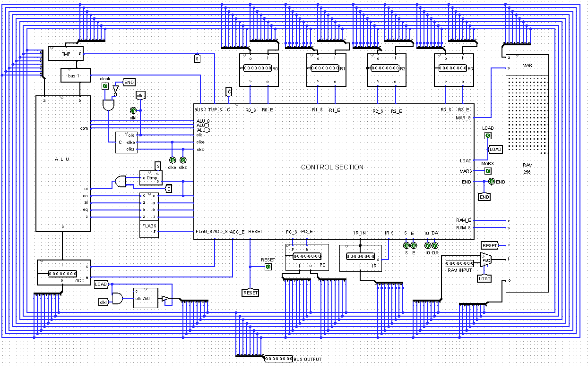
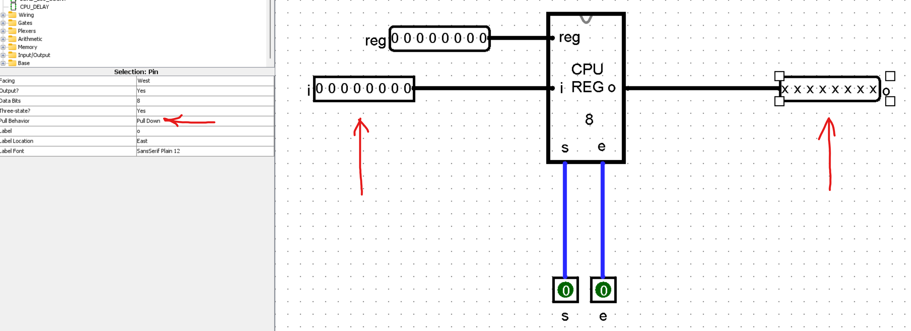
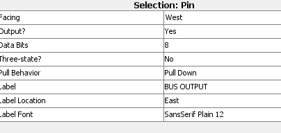
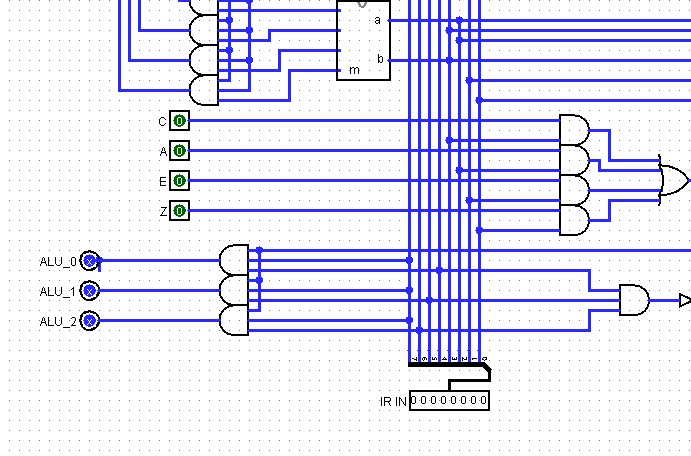
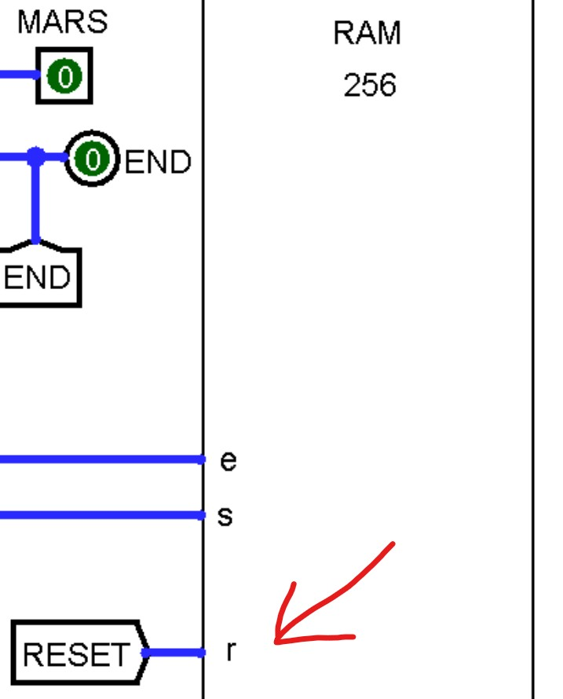
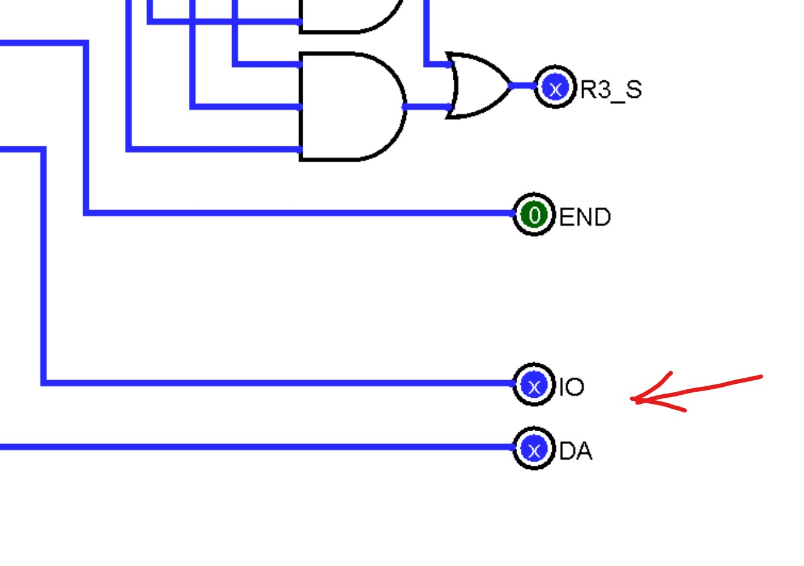
Items 1, 3, 6 and 9 are drawn larger on page 3. CPU_TEST, the tab you run, holds one CPU, a Clock to clock, inputs LOAD, RESET (a button) and MARS, an END LED, clkl/clk_e/clk_s readouts, hex displays, and the external RAM with its own COUNTER_256 on clkl (RAM sel = LOAD, clock = clkl, ld = 1, clr = 0, D to ram_input), as page 3 shows.
14.19 What “complete” means
The final project grades your CPU by tier — which instructions pass their tests. Underneath every tier is the same finished machine. Your CPU simulation is complete when:
CONTROL_UNIThas every input and output in §14.17, with the equations in the table (the optional four aside).- The
CPUtab has the nine additions of §14.18, and norunpin, test port or separateREG_SELECT. CPU_TESTholds the CPU, the Clock, LOAD, RESET, MARS, END and the external RAM.- The page 3 procedure works from Simulate → Reset: LOAD, RESET (all
00), file, MARS, ticks toFF, 0 1 0, MARS and LOAD off, run to END. - Built-ins appear only where page 3’s exception allows them.
Tier C is the one exception: a CPU that stops at Checkpoint 6 has no loader, so it keeps Week 13’s run pin and test port and is run by hand, as the final project page says.
For how a real control unit is organized at full size — hard-wired, as yours is, or microprogrammed — log into your Saylor CS301 account at the CS301 course page; its unit on the processor covers both.
Where you are
That is the whole machine. Build it into Checkpoint 7, and keep this page open while you finish the final project: it is in each of the last three weeks’ modules for that reason.